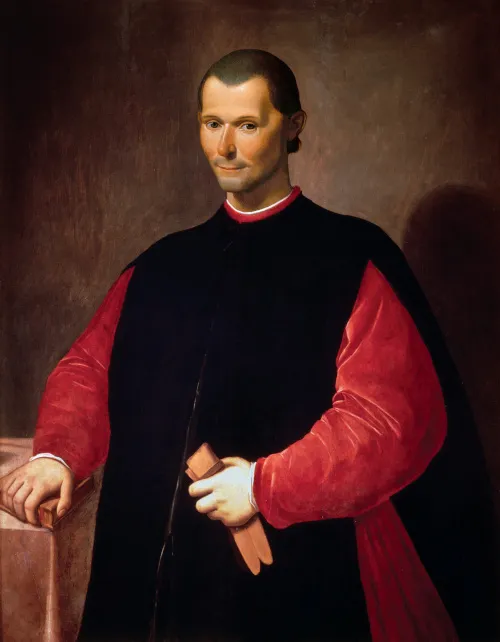

Retrato de Maquiavel
Nicolau Maquiavel foi um dos principais autores de sua época, o Renascentismo, que consiste em um
intermédio entre a Idade Média e a Modernidade. Defensor do absolutismo e de ações duras e austeras
por parte de um governante quando necessário, Maquiavel foi injustiçado ao entrar para a história
como o patrono da expressão “maquiavélico”, utilizada para designar alguém capaz de tudo pelo poder.
Para Maquiavel, a conservação do poder nas mãos de um bom governante, mesmo que em situações de
maior controle, é condição necessária para a conservação da ordem política.,
Nicolau Maquiavel, em italiano, Niccoló di Bernardo dei Machiavelli, nasceu no dia 3 de maio de 1469, no
berço do renascimento das artes e da cultura europeia, a cidade de Florença. Em sua época, ainda não
havia unificação italiana e as cidades localizadas na Península Itálica eram independentes. Apesar de
entrar para a história como filósofo e teórico político, foi na prática que Maquiavel construiu sua
carreira: ele foi um destacado funcionário público florentino em dois períodos completamente opostos da
cidade, a república e a monarquia.
Quando Maquiavel era ainda uma criança, Florença era governada pela família Médici, que já sofria
sucessivas tentativas de golpes. Em 1478, Juliano de Médici foi assassinado e seu irmão, Lourenço de
Médici (Lourenço, o Magnífico), que dividia o poder com Juliano, tornou-se senhor absoluto da república
florentina, ficando no poder até 1492, quando faleceu.
Após a morte de Lourenço, Piero II, seu filho, herdou o poder da República de Florença, mas um golpe
arquitetado pelo padre dominicano Jerônimo Savonarola expulsou os Médici de Florença. Em 1497,
Savonarola foi excomungado da Igreja.
Em 1498, Maquiavel foi nomeado, pela primeira vez, para um cargo público em Florença, tornando-se
segundo secretário da senhoria, crescendo, três meses depois, para chefe da segunda chancelaria,
seguindo carreira brilhante à frente da chancelaria da cidade nos negócios exteriores.
No ano de 1501, Maquiavel casou-se com Marietta Corsini, com quem teve seis filhos. Sua biografia o
aponta como um pai financeiramente provedor, mas carinhoso apenas quando estava presente, pois a maior
parte do tempo ele passava nos gabinetes da chancelaria ou viajando a trabalho.Em 1512, os Médici
retomaram o poder de Florença. Em 1513, devido a uma atuação forte de Maquiavel com o governo anterior e
a sua ligação com milícias e campanhas militares ligadas a esse mesmo governo, ele foi acusado de
conspiração, chegando a ser preso e torturado. Ao ser solto, exilou-se por um tempo em sua casa de
campo. Foi nessa época que ele redigiu os primeiros esboços de O Príncipe.
O senhor de Florença, Juliano de Médici, pretendeu trazer Maquiavel para o serviço público novamente, o
papa, no entanto, não o permitiu. Juliano de Médici morreu em 1516, e quem herdou o poder de Florença
foi seu filho, Lourenço de Médici (não podemos confundir este Lourenço e este Juliano com o Lourenço e o
Juliano que governaram Florença ainda no século XV, o Lourenço de agora é neto do Lourenço do passado, e
o Juliano é filho do Lourenço do passado, O Magnífico, que governou Florença sozinho após a morte de seu
irmão). Maquiavel dedicou a Lourenço a sua obra O Príncipe.
Em 1520, Maquiavel retornou ao serviço público, não mais ocupando a chancelaria, mas agora como
historiador oficial de Florença. A ele foi encomendada a história de Florença, obra que levou cinco anos
para ser finalizada. Maquiavel permaneceu com Lourenço, atuando como conselheiro e sendo enviado a
algumas missões.
O filósofo, teórico político e funcionário público florentino faleceu em 21 de junho de 1527. Seus dois
principais livros, Discurso sobre a primeira década de Tito Lívio e O Príncipe foram publicados
postumamente, em 1531 e 1532, respectivamente.